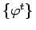
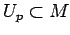
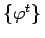
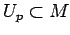

Inhalt Index DeskTop Bronstein

 Dynamische Systeme und Chaos Gewöhnliche Differentialgleichungen und Abbildungen Strukturelle Stabilität (Robustheit) Generische Eigenschaften
Dynamische Systeme und Chaos Gewöhnliche Differentialgleichungen und Abbildungen Strukturelle Stabilität (Robustheit) Generische Eigenschaften


Sei  ein dynamisches System auf der n-dimensionalen kompakten orientierbaren Mannigfaltigkeit
ein dynamisches System auf der n-dimensionalen kompakten orientierbaren Mannigfaltigkeit  . Der Punkt
. Der Punkt  heißt nichtwandernd bezüglich , wenn für eine beliebige Umgebung  von p gilt:
heißt nichtwandernd bezüglich , wenn für eine beliebige Umgebung  von p gilt:
| (17.27) |
| Beispiel |
|
Ruhelagen und periodische Orbits bestehen nur aus nichtwandernden Punkten. |
Die Menge aller nichtwandernden Punkte des von (17.1) erzeugten dynamischen Systems ist abgeschlossen, invariant unter  und enthält alle periodischen Orbits und alle
und enthält alle periodischen Orbits und alle  -Grenzmengen von Punkten aus
-Grenzmengen von Punkten aus  .
.
Das dynamische System  auf
auf  , erzeugt durch ein glattes Vektorfeld, heißt MORSE-SMALE-System, wenn folgende Bedingungen erfüllt sind:
, erzeugt durch ein glattes Vektorfeld, heißt MORSE-SMALE-System, wenn folgende Bedingungen erfüllt sind:
Satz von Palis und Smale: MORSE-SMALE-Systeme sind strukturstabil.
Die Umkehrung des Satzes von PALIS und SMALE gilt nicht: Es existieren für  strukturstabile Systeme mit unendlich vielen periodischen Orbits.
strukturstabile Systeme mit unendlich vielen periodischen Orbits.
Für  sind strukturstabile Systeme nicht typisch.
sind strukturstabile Systeme nicht typisch.